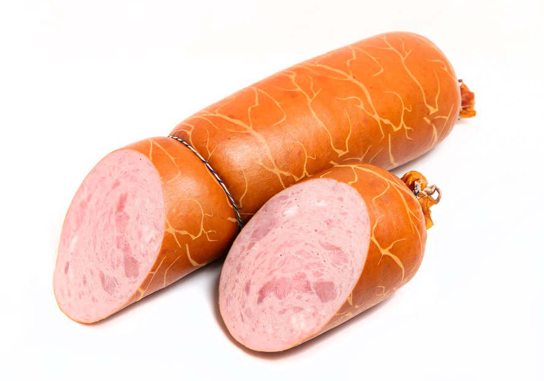

|  |
|
Колбаса является незаменимым источником витаминов и микроэлементов. Витамины в копченой колбасе представлены как жирорастворимыми (A, D, E, K), так и витаминами группы В(B1, B2, B3, B6, B12), PP и пантотеновой кислотой. Сосиски, также как и вареные колбасы, обогащены витаминами группы Е, В, А, РР, содержат макро и микроэлементы: кальций, йод, железо, магний, калий, натрий, фосфор. |